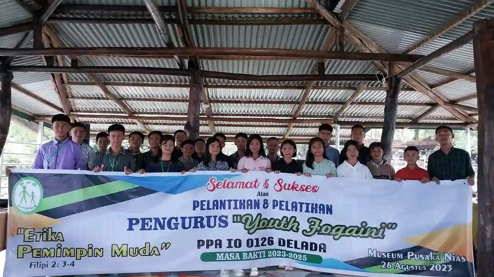

Sejarah
PPA Delada didirikan pada tahun 2010 di Gereja Amin Jemaat
Helefanikha. Didirikannya PPA Delada ini untuk membangun karakter
dan talenta anak khususnya di Gereja Amin Jemaat Helefanikha.Nama
"Delada" berasala dari Bahasa Nias yang artinya "Jembatan kita",
sehingga masyrakat sekitar atau orangtua anak mempercayai PPA Delada
sebagai tempat bertumbuhnya anak dan menjadi jembatan dalam
meembangun karakter Kristus bagi anak.
Kegiatan
PPA Delada tidak hanya terfokus belajar saja, ada banyak kegiatan
yang dilakukan baik di dalam gereja maupun diluar gereja, ada yang
bersifat religius seperti konser doa,perayaan natal,paskah dan hari
hari besar gereja, ada juga yang non-religius seperti membuat karya
seni,mengikuti sosialisasi,seminar,retreat,dan ada banyak kegiatan
lainnya.Kegiatan tersebut bukan hanya sekedar bersenag senang saja
melainkan ada banyak hal yang didapatkan oleh anak anak PPA Deleda.
Perayaan Natal 2023
Tema : Aku Anak Terang

Kunjungan PF
Kunjungan direktur Nasional Compassion,Senior Manager Of
Partnership bersama PF
Bakti sosial(Yayasan Pemulihan Kasih Bangsa)
Kami Belajar memberi dan mengasihi,mewujudkan Kehangatan dalam
kemanusiaan
Pekan Olahraga
Kreativitas adalah bahan bakar bagi semangat olahrga;
didalamnya,kita menemukan jalur baru untuk mencapai ketinggian
yang belum pernah terjamah sebelumnya
sosialisasi Perlindungan Anak
Sosialisasi Perlindungan anak ini hadiri oleh orangtua anak yang
dibekali berbagai inofrmasi dalam melindungi anak
Youth Fogaini
PPA Delada juga menanamkan,mengajarkan dan mengasah jiwa
kepemimpinan anak sehingga didirikan sebuah organisasi youth yang
diberi nama FOGAINI. FOGAINI kepanjangan dari "Forum Anak Muda Masa
Kini" disisi lain kata FOGAINI berasal dari bahasa Nias yang artinya
"pancingan".Jadi secara garis besar youth Fogaini bertujuan untuk
menjadi tempat pancingan anak anak untuk menumbuhkan jiwa
kepemimpinan mereka.youth Fogaini juga turut serta dalam kegiatan
acara besar Gereja Amin jemaat Helefanikha,juga merupakan tempat
untuk mengasah bakat dan talenta dan kewirausahawan. Berikut
Ggalerry kegiatan:
Pelantikan Pengurus Youth
